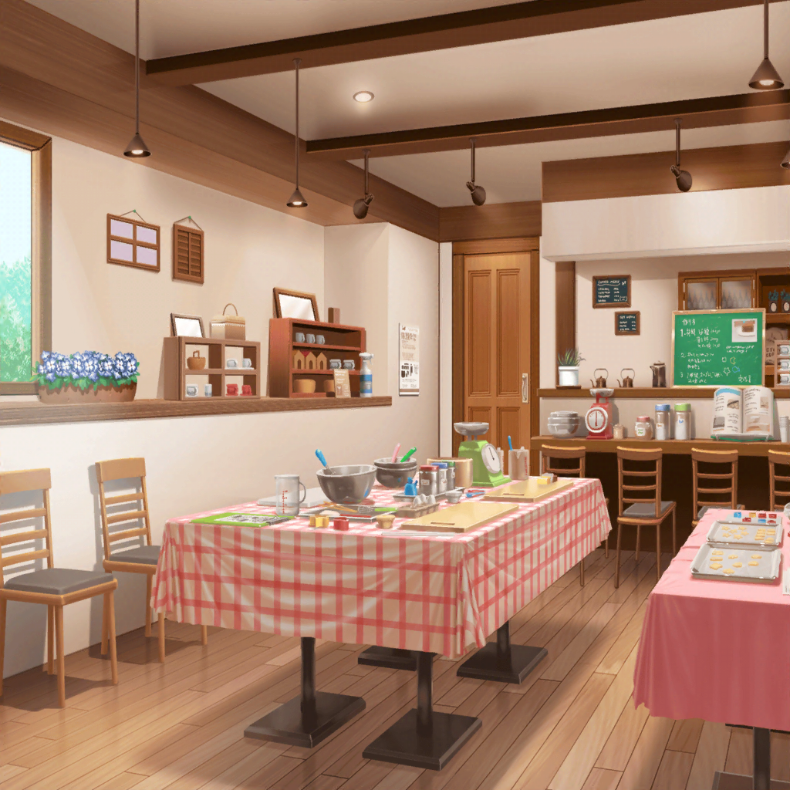

お菓子教室当日
羽沢珈琲店
つぐみ
（と、とうとう当日……！
わわ、思ってたより人が多いよ……っ）
つぐみ
（お母さんのフォローって言っても、
この人数を相手に、私も教えるの……？）
つぐみ
（だ、大丈夫！
昨日、夜遅くまで色々と手順を予習したし、
どんなことを聞かれても答えられるはずっ！）
紗夜
あら？
あなたは確か……
つぐみ
えっ！
Roseliaの紗夜さん……！？
紗夜
羽沢さん……でしたよね？
……なるほど。
『羽沢珈琲店』ここはあなたのご実家だったんですね
つぐみ
ひょっとして、紗夜さんも……
お菓子教室に参加しに来たんですか？
紗夜
そうです。
クッキーといいますかお菓子には
人をリラックスさせる効果がありますから
つぐみ
えっ？
た、確かに美味しいお菓子を食べると
和みますよね……！
紗夜
ええ。バンドの練習をする時に
そういうリラックス効果がある差し入れがあるとないとでは、
全く効率が違います
紗夜
私のバンドメンバーには、
いつもそういったものを
作ってきてくれる人がいるのですが……
紗夜
前にその人が練習に来れなかった時、
みんなどこか落ち着かず、なかなか練習に熱が入りませんでした
つぐみ
そ、そうだったんですか
紗夜
私がもしお菓子を作って、
差し入れとして持って行ければ……
あの時の雰囲気は、もう少し変わっていたはずです
紗夜
だからこそ、今度、似たような状況になった場合、
同じことを繰り返さないように、
お菓子作りを学ぼうと思いました
つぐみ
なるほど。
そういう理由だったんですね？
紗夜
はい
つぐみ
（紗夜さんって、すごく真面目なんだなあ……）
紗夜
羽沢さん？
私の顔に何かついていますか？
つぐみ
あ、いえっ！
バンドのためにそこまで考えられる紗夜さんが
すごいなって思って
紗夜
……すごい？
バンドをより良くしていくために行動することは
当たり前だと思いますが……
つぐみ
それでも、それを実際に
行動に移すことができる紗夜さんはすごいです！
紗夜
そ、そうですか……
けど、私は初心者だから、うまく作れるかどうか……
紗夜
あの、羽沢さん。
今日作るアイシングクッキーとは、どのようなものなんですか？
普通のクッキーより難しそうなんだけど……
つぐみ
いえ、アイシングというのは普通のクッキーの表面に、
お砂糖や卵白で着色してデコレーションすることです！
つぐみ
ですからやることは、普通のクッキーを焼いて、
デコレーションするだけなので、そんなに難しくはありませんよ
紗夜
うまくできればいいのだけれど……
つぐみ
そんなに心配しないで平気です！
つぐみ
テーブルの上に置いてある薄力粉とバター、
あとはお砂糖をこねて、クッキーの生地を作るだけですよ
つぐみ
詳しくは、今から母が説明しながらやるので
よく見ててください
つぐみ
もしわからないことがあったら、なんでも聞いてくださいね！
10分後
つぐみ母
つぐみ、ちょっといい？
つぐみ
どうしたの、お母さん？
つぐみ母
さっき話していた女の子は、あなたのお友達なの？
つぐみ
それって、紗夜さんのこと？
う、うん……友達だよ
つぐみ母
なら、あの子にはあなたが付き添ってあげなさい
つぐみ
えっ、私が！？
つぐみ母
さっきからずっとキョロキョロしてて、
何をやっていいのかわからないみたいだから。
いい、わかったわね？
つぐみ
（あ、行っちゃった……
私が、紗夜さんに……うぅ、緊張する）
つぐみ
（あこちゃんから話を聞いたことがあるけど、
紗夜さんってすごく真面目で厳しいんだよね……？
そんな人の前で、もし説明を間違えたりしたら……）
つぐみ
（で、でも、お母さんが言ってた通り、
紗夜さん、さっきからキョロキョロして
困ってるみたいだし……）
つぐみ
（……う、うん、そうだよね！
サポートを引き受けるって言ったのは私だし、
お母さんに任されたんなら、ちゃんとやらないとだよね！）
つぐみ
（が、頑張ろう……！）